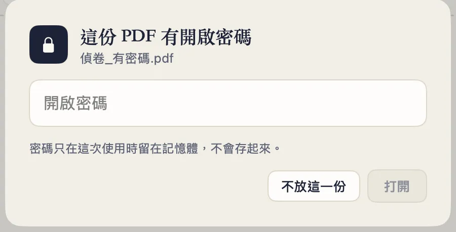
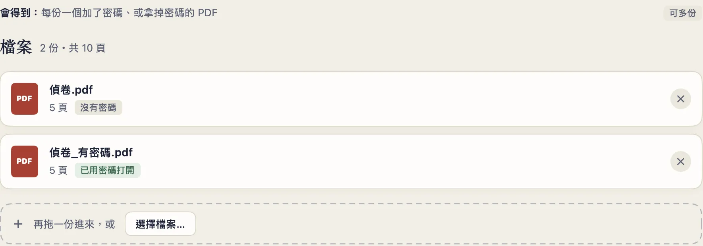
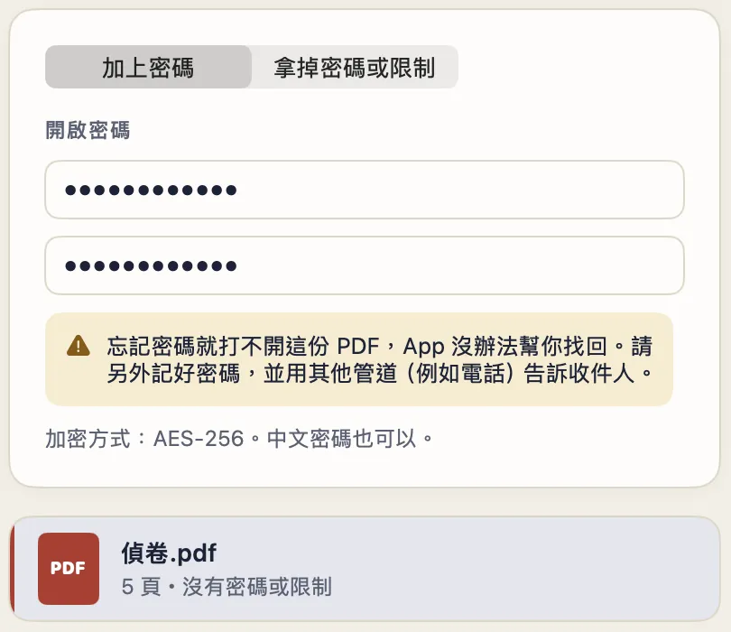
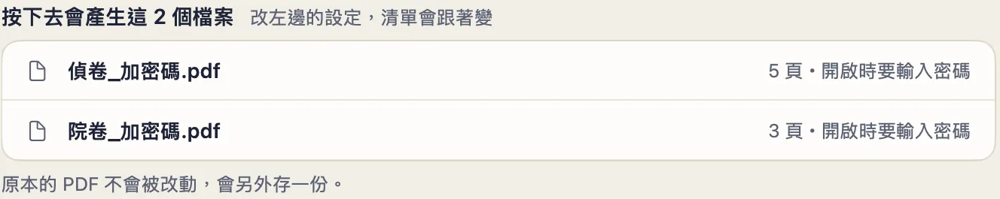
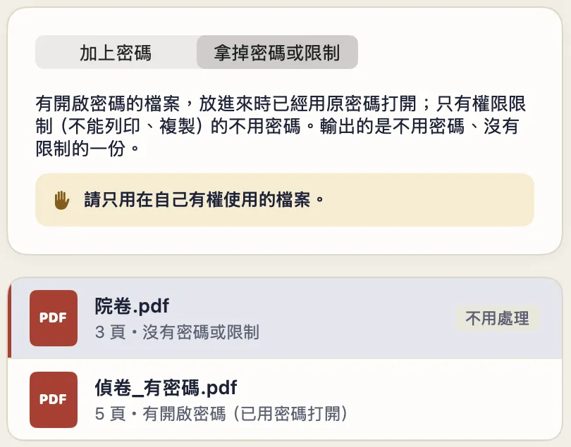
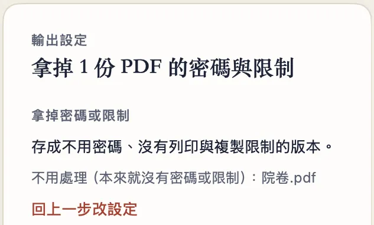
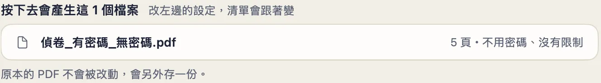

替 PDF 加上或拿掉開啟密碼：密碼教學
寄卷證或書狀給當事人之前，有時會想加上開啟密碼；收到別人加了密碼的 PDF，又想存一份不用每次輸入密碼的版本。「密碼」這個工具做這兩件事。另外，有開啟密碼的 PDF 放進任何一個工具時，都會先就地問密碼，這篇也一起說明。
這個工具做什麼
「密碼」在首頁的「遞狀與交付」那一組。它有兩種用途，在第二步上方切換：
- 加上密碼：替 PDF 加上開啟密碼。加密方式是 AES-256，打開時要輸入密碼；打開之後可以列印、複製。
- 拿掉密碼或限制：另存一份不用密碼、沒有列印與複製限制的版本。
兩種用途都是另存新檔，頁面內容不會改變，原本的 PDF 也不會被改動。一次可以放好幾份，每份各自輸出一個檔案。
有開啟密碼的 PDF：放進來時就地輸入
先說一件不限於這個工具的事。把有開啟密碼的 PDF 放進審判工具箱的任何一個工具（書籤形成、供述切割、全文搜尋、頁面整理……），放進來的當下就會跳出「這份 PDF 有開啟密碼」。

- 輸入開啟密碼，按「打開」。密碼不對時會寫「密碼不對，請再試一次。」，留在原地讓你重打。
- 不想放這一份，按「不放這一份」。
- 一次放了好幾份有密碼的，會一份一份問，左下角寫著「還有 N 份要密碼」。
- 密碼只在這次使用時留在記憶體，不會存起來。App 關掉之後，下次放同一份還要再輸入一次。
只有權限限制（可以打開，但不能列印、複製）的 PDF 不用密碼，放進來時不會問。判決下載不收你自己的 PDF，沒有這個步驟。
第一步：放入 PDF
從首頁或側邊欄點「密碼」，把 PDF 拖進來，或按「選擇檔案…」。放進來的每一份會標出它的狀態：

- 沒有密碼：沒有開啟密碼，也沒有權限限制。
- 已用密碼打開：放進來時輸入過開啟密碼的那一份。
按右上角的「下一步：設定與預覽」。
加上密碼
第二步上方選「加上密碼」，在「開啟密碼」輸入兩次同樣的密碼。兩次不一樣時，下面會寫「兩次輸入的密碼不一樣」，右上角的按鈕不能按。

- 中文密碼也可以。
- 忘記密碼就打不開這份 PDF，App 沒辦法幫你找回。請另外記好密碼，並用其他管道（例如電話）告訴收件人，不要跟檔案寫在同一封信裡。
- 右邊是選到那一份的頁面，可以翻頁。這裡只是確認放對檔案，頁面內容不會改變，只改密碼與權限。
放進來的檔案本來就有開啟密碼時，也會照這裡設定的新密碼另存一份。要換密碼的話，用原密碼放進來，再在這裡輸入新的密碼。
按「下一步：輸出」。右邊列出會產生的檔案，每一份檔名後面加上「_加密碼」，並寫著「開啟時要輸入密碼」。

左邊的輸出設定再提醒一次：忘記密碼就打不開，App 沒辦法幫你找回。
確認好了，按右上角的「開始輸出 N 個檔案」。
拿掉密碼或限制
第二步上方選「拿掉密碼或限制」。有開啟密碼的檔案，放進來時已經用原密碼打開；只有權限限制的不用密碼。輸出的是不用密碼、沒有列印與複製限制的一份。

請只用在自己有權使用的檔案。這個工具不會破解密碼：沒有開啟密碼，就放不進來。
本來就沒有密碼也沒有限制的檔案，會標「不用處理」，不會輸出。到了輸出這一步，左邊會寫出哪幾份不用處理，右邊只列需要處理的檔案，檔名後面加上「_無密碼」。
輸出設定

會產生的檔案

放進來的每一份都不用處理時，右上角會寫「這幾份都沒有密碼或限制，不用處理」，不能往下走。
輸出的檔案
- 加上密碼：「原檔名_加密碼.pdf」，每份一個。
- 拿掉密碼或限制：「原檔名_無密碼.pdf」，每份一個。
檔案存在「下載項目 › 審判工具箱」底下這次新開的資料夾，資料夾名稱是第一份的檔名加上用途，例如「偵卷 加上密碼」。輸出前可以用「存到 › 選擇…」換位置。
加了密碼的檔案，用 PDF 閱讀程式打開時會要求輸入密碼。寄出之前，建議自己先打開一次，確認密碼對。
在 iPhone・iPad 上
步驟與選項跟 Mac 相同。在 iPhone 上，「下一步：設定與預覽」等按鈕在畫面下方，第二步的設定與檔案清單上下排列，沒有右邊的頁面預覽。用相機掃描好的 PDF，也可以在「接著用其他工具處理？」裡直接選「密碼」。輸出的檔案在「檔案」App 的「我的 iPhone › 審判工具箱」。細節在在 iPhone・iPad 上使用。
做不到的事／要注意
- 忘記密碼，App 沒辦法找回，也沒辦法打開沒有密碼的加密檔。
- 加密只有 AES-256 一種。很舊的 PDF 閱讀程式（例如 Acrobat 9 以前的版本）可能打不開。
- 只能加「開啟密碼」。沒有「可以打開但不能列印、不能複製」這種只設權限的輸出。
- 放進來時輸入的密碼只留在記憶體；App 不會記住任何 PDF 的密碼。
- 輸出的 PDF 不會保留原檔的表單欄位和內嵌附件。
下一篇：合併、拆分、刪頁：頁面整理教學。簡短的步驟在使用說明。
常見問題
忘記自己設的密碼怎麼辦？
沒有辦法。審判工具箱不會記住密碼，加密方式是 AES-256，忘記就打不開。原本沒加密碼的 PDF 不會被改動，可以用原檔重新加一次。
可以把別人寄來的 PDF 密碼拿掉嗎？
要先知道開啟密碼。放進來時用原密碼打開，再選「拿掉密碼或限制」另存一份。請只用在自己有權使用的檔案。
有密碼的卷證可以直接用其他工具處理嗎？
可以。放進任何一個工具時都會先問密碼，輸入後就照常處理，不用先拿掉密碼。密碼只留在記憶體，不會存起來。